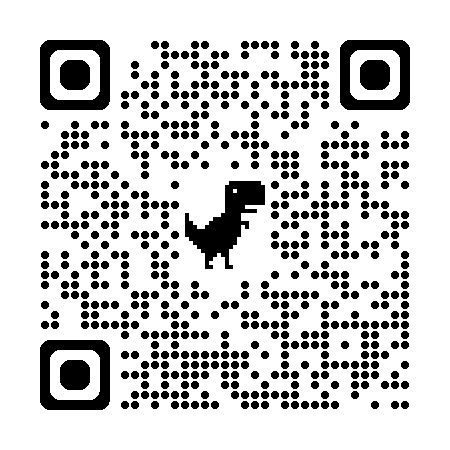

MessMate lets hostel students opt out of meals before the cutoff, rate food, and report issues — giving mess committees a live headcount and real feedback, every single day.
Get the App
Works on Android & iOS. Free for all hostel students.
Hostel kitchens prepare the same quantity regardless of how many students actually show up. The result? Predictable waste, frustrated students, and a committee flying without instruments.
Kitchens have no idea how many people will eat until it's too late to adjust quantities.
Feedback happens on WhatsApp groups or not at all. The mess committee sees none of it systematically.
Students find out what's cooking when they arrive. If they don't like it, the food still gets made.
Without data, it's hard to push for better ingredients or cooking — every complaint becomes subjective.
Students take two minutes. The mess committee gets an entire operations dashboard in return.
Open the app to see what's being served for breakfast, lunch and dinner — posted by the mess team each morning.
Not eating? Mark yourself out before the cutoff. That signal goes straight to the kitchen's headcount.
After eating, rate the meal and flag any hygiene or quality issue. All reports are timestamped and attributed.
Live headcount forecast, aggregated ratings, issue log, and waste saved — all in one committee dashboard.
MessMate has two modes — one for students, one for the committee — that talk to each other in real time.
Explore our data analysis to see how meal ratings directly correlate with the amount of food thrown away each day.
Free for all hostel students. No sign-up friction — log in with your college email and you're in.
Download NowPoint your phone camera at the code — no app store search needed.